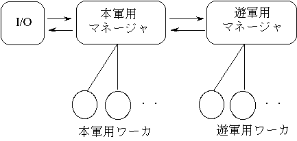

（５３）囲碁対局システム：並列版「碁世代」ＧＯＧ
マ シ ン：Multi-PSI
環 境：PIMOS, SIMPOS
言 語：KL1, ESP
ソース量：1.5 MB
文 書：マニュアル (日本語／英語)
概要
本プログラムは計算機により囲碁の対局を行うプログラムである。
構成

特徴
囲碁の対局を行うシステムは大規模な知識処理システムであり、大規模知識処
理システムの並列化方式の研究、付加分散を始めとする処理効率向上のための
研究に適している。本システムは、囲碁システムにおいて初めて並列処理を取
り入れたもので、3つの特徴がある。
- 人間の思考過程をシミュレート
- 大きな粒の仕事を並列実行
- リアルタイム性を保持しながら碁世代を強くするための新しいアイデア
「遊軍処理方式」を実現 (参考資料参照)
参考資料
- Experimental Version of Parallel Computer Go-Playing System
"GOG",S.Sei et al.,ICOT-TR 718
ＦＴＰ
- 囲碁対局システム：並列版「碁世代」ＧＯＧ [834K]

www-admin@icot.or.jp